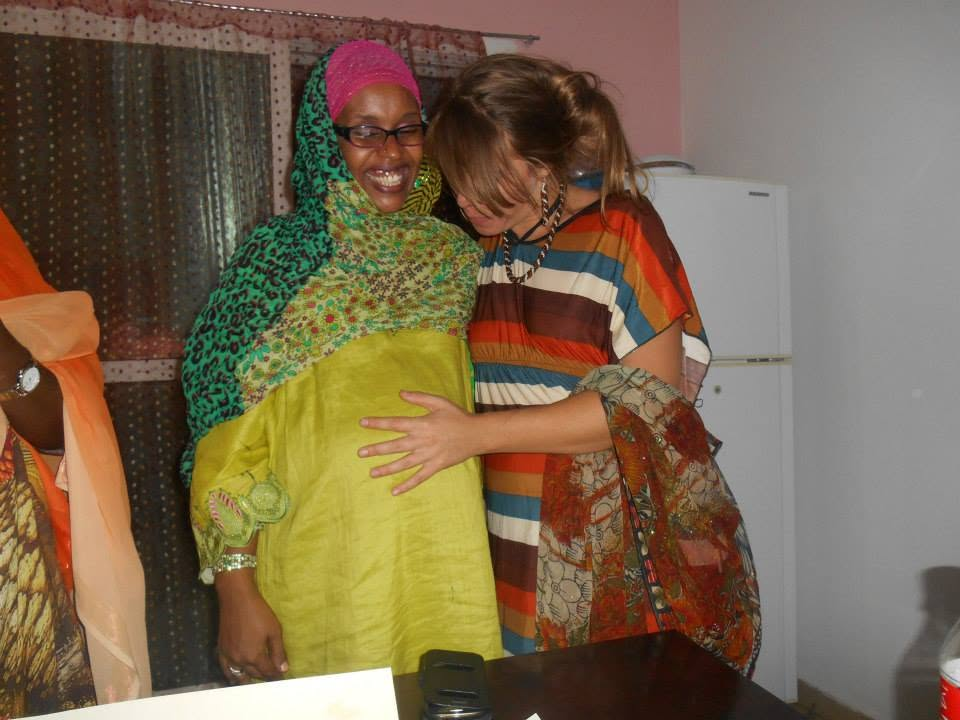
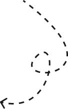
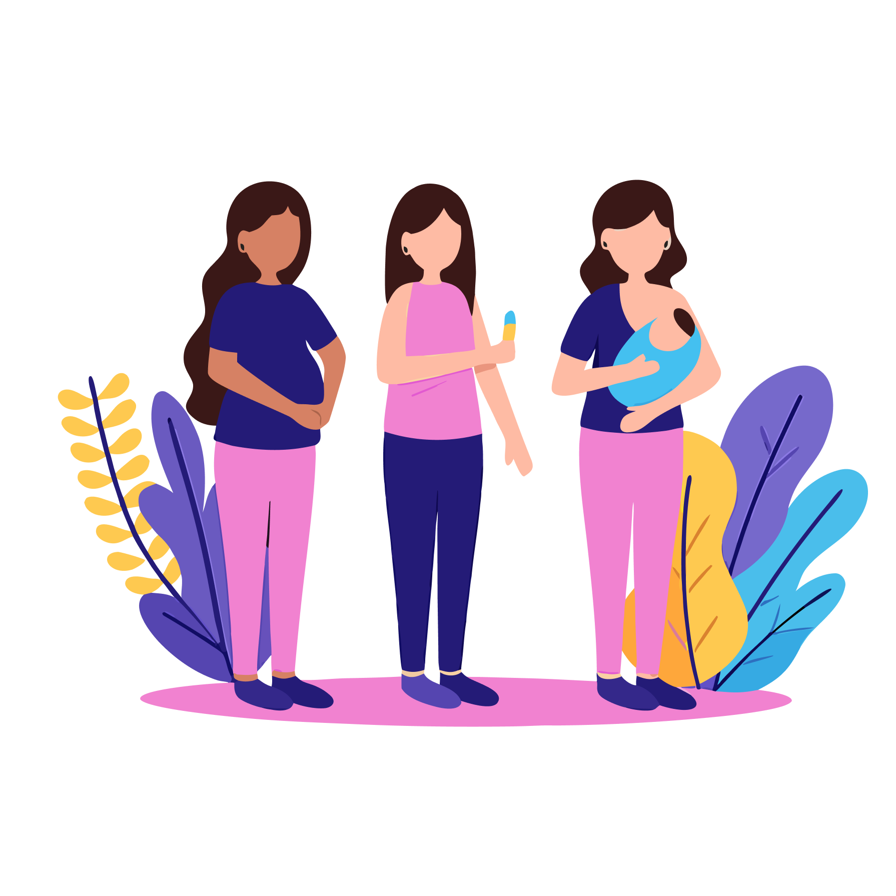

Mon parcours
Je suis Myrtille, sage-femme indépendante, diplômée depuis 2014.
Mon parcours a débuté en Afrique, dans des contextes exigeants qui ont profondément façonné ma pratique. J'y ai appris l'essentiel : faire confiance aux ressources des femmes et reconnaître la force d'un accompagnement humain et respectueux.
De retour en Suisse, j'ai exercé en maisons de naissance puis à domicile, dans le cadre du suivi global. Ces expériences ont renforcé ma conviction qu'un accompagnement continu, attentif et personnalisé transforme profondément le vécu de la maternité.
Aujourd'hui maman de deux enfants, j'ai enrichi ma pratique par des formations en psychophonie et en naturopathie, afin de proposer une approche globale, attentive au corps, aux émotions et à l'équilibre de chaque femme.

Prestations
Suivi préconceptionnel
J'accompagne les femmes et les couples en période préconceptionnelle, notamment lorsqu'une grossesse tarde à venir.
Mon approche vise à préparer le terrain à la conception en travaillant sur l'alimentation, l'hygiène de vie, l'équilibre global et les éventuelles carences, afin de favoriser des conditions propices à une future grossesse.
Suivi pré natal
Chaque consultation est un temps d'échange, pour suivre l'évolution de votre grossesse, répondre à vos questions et vous aider à vivre cette période avec plus de sérénité.
Je vous accompagne également dans la préparation à la naissance, en respectant votre rythme, vos choix et votre vécu.
Si vous le souhaitez, j'intègre des approches complémentaires comme le LineQuartz, une méthode douce basée sur les vibrations sonores, utilisée pour favoriser la détente, relâcher les tensions et accompagner le corps dans la préparation à la naissance.
Ces approches s'inscrivent toujours dans un suivi global, adapté à votre situation, dans un cadre respectueux et sécurisant.

Le suivi post-natal
Après la naissance, je vous accompagne avec douceur et bienveillance dans cette période de transition, souvent intense et pleine de changements.
Les consultations permettent de soutenir votre récupération, de répondre à vos questions et de vous accompagner dans les premiers jours avec votre bébé.
Je vous propose un accompagnement personnalisé autour de l'allaitement, du lien avec votre enfant et de votre nouvelle organisation, en respectant votre rythme et vos choix.
Je reste également attentive à votre état de santé et à celui de votre bébé, afin d'identifier si nécessaire certaines situations qui pourraient bénéficier d'un accompagnement ou d'une orientation spécifique.
Mon objectif est de vous offrir un espace sécurisant, où vous pouvez vous sentir écoutée, soutenue et accompagnée en toute confiance.

La psychophonie
"Naitre en chantant" est une préparation à la naissance basée sur le chant, la respiration et les vibrations de la voix, favorisant la connexion avec son bébé et la confiance en soi pour donner naissance.

LineQuartz®
Appareil de bio-résonance utilisé pour favoriser l'équilibre global de l'organisme. Il associe la luminothérapie, la chromothérapie, la musicothérapie et la lithothérapie (quartz) pour favoriser détente et équilibre. Aussi bien en prénatal qu'après la naissance cette technologie innovante est un véritable atout.
Site internet du fabriquant : Accueil | LineQuartz.

MILTA
MILTA est une technologie de photobiomodulation qui utilise la lumière rouge et infrarouge, associée à un laser de faible puissance et à un champ magnétique. Elle stimule l’activité cellulaire et les processus naturels de réparation, ce qui peut accompagner la prise en charge des cicatrices en favorisant la régénération tissulaire et en réduisant l’inflammation et les douleurs.